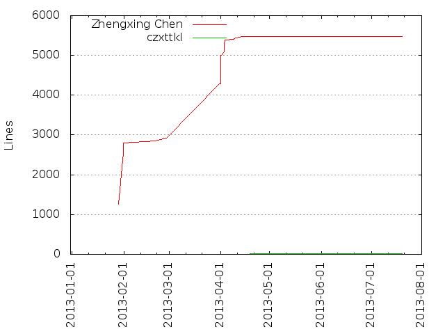
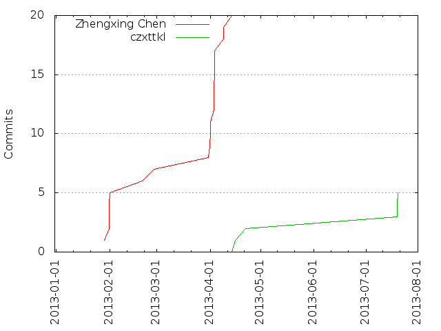

Authors
| Author | Commits (%) | + lines | - lines | First commit | Last commit | Age | Active days | # by commits |
|---|
| Zhengxing Chen | 20 (80.00%) | 5483 | 2483 | 2013-01-29 | 2013-04-14 | 74 days, 18:26:46 | 10 | 1 |
| czxttkl | 5 (20.00%) | 13 | 336 | 2013-04-16 | 2013-07-20 | 95 days, 9:25:45 | 3 | 2 |


| Month | Author | Commits (%) | Next top 5 | Number of authors |
|---|
| 2013-07 | czxttkl | 3 (100.00% of 3) | | 1 |
| 2013-04 | Zhengxing Chen | 12 (85.71% of 14) | czxttkl | 2 |
| 2013-03 | Zhengxing Chen | 1 (100.00% of 1) | | 1 |
| 2013-02 | Zhengxing Chen | 6 (100.00% of 6) | | 1 |
| 2013-01 | Zhengxing Chen | 1 (100.00% of 1) | | 1 |
| Year | Author | Commits (%) | Next top 5 | Number of authors |
|---|
| 2013 | Zhengxing Chen | 20 (80.00% of 25) | czxttkl | 2 |
| Domains | Total (%) |
|---|
| czxttkl | 16 (64.00%) |
|---|
| gmail.com | 5 (20.00%) |
|---|
| activate.adobe.com | 3 (12.00%) |
|---|
| czxttkl.mshome.net | 1 (4.00%) |
|---|